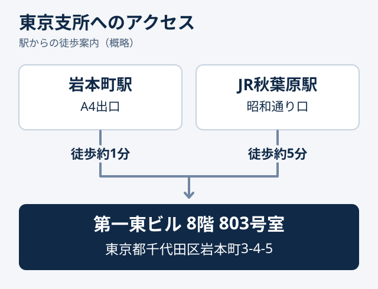
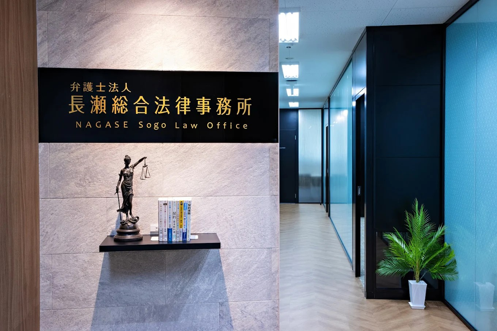

東京支所｜岩本町・秋葉原エリア
東京で、
確かな法的支援を。
岩本町駅徒歩1分・秋葉原駅徒歩5分。
個人の方から企業の方まで、幅広い法律問題に対応いたします。
法人・個人の法律相談
取扱分野
書籍・セミナーの実績
新着情報
東京支所のご案内
〒101-0032 東京都千代田区岩本町3-4-5第一東ビル803号室
都営新宿線 岩本町駅 A4出口 徒歩1分
JR秋葉原駅 昭和通り口 徒歩5分
平日 9:00 - 18:00（土日祝日も事前予約で対応可能）
東京支所へのアクセス

Ibaraki Area Network
茨城県内4拠点との連携
東京支所に加え、茨城県内の牛久本部・日立支所・水戸支所・守谷支所が連携し、広域のご相談に対応します。
TX沿線・2拠点体制
秋葉原 × 守谷 2拠点体制
つくばエクスプレス沿線エリアを広くカバー
北千住約10分
流山おおたかの森約25分
守谷約35分
つくば約45分
東京支所と茨城県内4拠点が連携し、迅速で質の高いリーガルサービスを提供します。
つくばエクスプレス沿線のご案内ご相談の流れ
お問い合わせ
お電話またはフォームより
お問い合わせください。
日程調整
担当者よりご連絡し、
ご相談日を調整します。
ご相談
初回30分まで無料。以降は有料です。
ご提案
解決に向けたご提案を
いたします。
東京支所の法律相談予約
共通フォームでは「無料法律相談予約」を選び、「お問い合わせ内容」欄に「東京支所希望」とご記入ください。折り返しのご連絡で相談日時が確定します。
オンライン相談をご希望の方は、共通窓口の「オンライン予約システムでのご予約」をご確認ください。